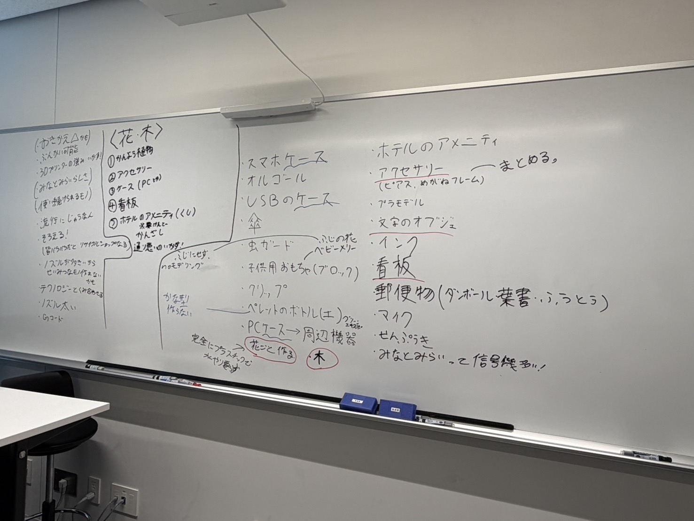
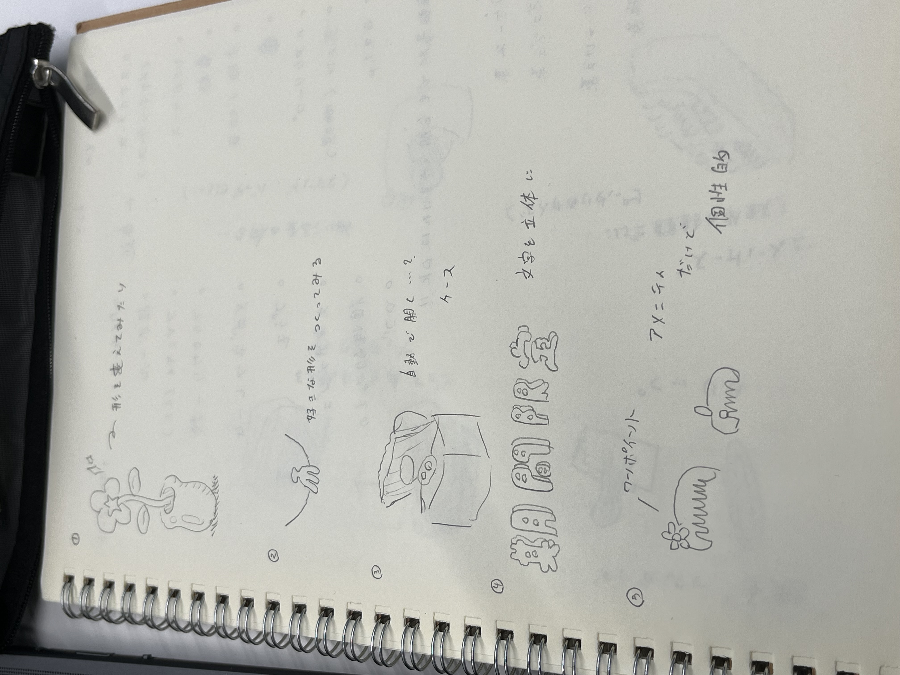

このページについて
このページでは、ペレット化したクリアファイルを利用したモノづくりプロジェクト の記録をまとめます。
横浜市さんからご教授いただいたサーキュラーエコノミーについてのお話は以下のページをご覧ください。
２. クリアファイル再生プロジェクト
横浜市さんからご教授いただいたサーキュラーエコノミーについてのお話は以下のページをご覧ください。
２. クリアファイル再生プロジェクト
モノづくりのテーマ
実用性のあるなしに関わらず、さまざまな案が出されました。
3Dプリンターならではの利点を生かしつつ、魅力的なモノづくりを目指します。
なかでも、「植物」「アクセサリー」「ケース」「看板」「アメニティ」といった案が多く出されました。
印刷方法やIoTなどとの組み合わせにより、より良いモノができるのではないかという考えもあります。
こちらは、みつをが考えた上記５つのビジュアルイメージです。
3Dプリンターならではの利点を生かしつつ、魅力的なモノづくりを目指します。

なかでも、「植物」「アクセサリー」「ケース」「看板」「アメニティ」といった案が多く出されました。
印刷方法やIoTなどとの組み合わせにより、より良いモノができるのではないかという考えもあります。

こちらは、みつをが考えた上記５つのビジュアルイメージです。